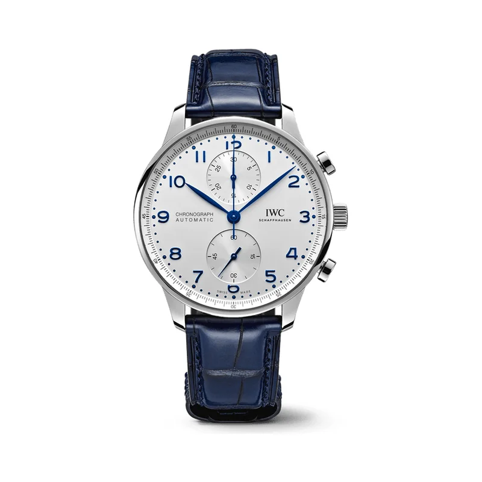

Encyclopedia / IWC / Portugieser Chronograph

Current deal · verified Oct 21, 2026, 9:10 AM ET
$7,718 Retail $9,200
Save $1,482 (16%) · new · WatchMaxx
Ref. IW371605 (silver-plated dial, blue alligator strap) · Available (WatchMaxx: limited quantity)
Brand new from a grey-market dealer; the warranty may be WatchMaxx's rather than IWC's. Jomashop had a pre-owned one at $5,995. Prices change fast; check the store before you buy.
Price comparison: fixed-price listings
| Store | Condition | Box & papers | Asking price | Link | Checked |
|---|---|---|---|---|---|
| Watchfinder | pre-owned | Yes | $5,855 | View | Oct 19, 2026 |
| WatchMaxx | new | Yes* | $7,718 | View | Oct 21, 2026 |
Fixed-price (buy-now) asking prices in USD for ref. IW371605, cheapest new and cheapest pre-owned with box and papers per store, sorted low to high and checked Oct 19, 2026 (ET). Buy-now listings only. Pre-owned listings are shown only when the listing states box and papers. * New from a grey-market dealer: comes boxed, but the warranty card may be the dealer's rather than the brand's. Chrono24 rows are individual third-party marketplace sellers. Prices change fast; confirm with the store.
What it really costs
| Market | Price | Source |
|---|---|---|
| IWC US retail | $9,200 | iwc.com |
| Grey-market new | $7,718 at WatchMaxx | watchmaxx.com |
| Pre-owned | about $5,100 – $8,300 (median ~$6,150) | Chrono24 |
All prices in USD, checked Oct 19, 2026 (ET). Pre-owned ranges are the middle 80% of asking prices on the first Chrono24 results page for that ref (about 60 listings, used and some unworn), fixed-price listings only. Grey-market = brand-new from a non-authorized dealer.
Buying guide
Key references
| Ref. | What it is | US retail |
|---|---|---|
| IW371605 | 41 mm steel, silver-plated dial, blue alligator strap | $9,200 |
Which one I'd pick
New vs pre-owned: new is 16% off at $7,718. Pre-owned asks centre on about $6,150, which is the value play if you don't need a new warranty.
What to check before you buy
- Box and papers: a brand warranty card matters for resale. Grey-market new watches may carry the dealer's warranty instead of the brand's, so ask which one you're getting.
- Strap: the original alligator strap is expensive to replace. Check its condition and the original buckle.
- Fakes and red flags: avoid prices far below the grey-market numbers above, stock photos only, or sellers who won't show the caseback, clasp and warranty card.
Alternatives worth a look
- IWC Pilot's Watch Mark XX: IWC's simpler pilot's watch with a 5-day movement. (40 mm stainless steel, IWC Calibre 32111, retail $5,900 (IW328201))
- Omega Speedmaster Moonwatch Professional: The sporty chronograph classic, below retail. (42 mm stainless steel, Calibre 3861, retail $7,800 (.001, hesalite, bracelet); $9,000 (.002, sapphire, bracelet))
- Jaeger-LeCoultre Reverso Tribute Small Seconds: An Art Deco dress watch from the other side of fine watchmaking. (45.6 x 27.4 mm stainless steel, Calibre 822/2, retail $12,000)
History
The Portugieser line goes back to 1939, when IWC developed the ref. 325 for Portuguese dealers who wanted a wristwatch with the precision of a pocket watch.
IWC itself has been based in Schaffhausen since it was founded in 1868.
The Portugieser Chronograph, with its peripheral scale and recessed totalisers, has been, in IWC's words, the most coveted member of the Portugieser family since 1998. The IW371605 is the 41 mm steel version with a silver-plated dial.
Specifications
| Brand | IWC |
|---|---|
| Model | Portugieser Chronograph |
| Key references | IW371605 |
| Launch year | 1939 (Portugieser line); chronograph since 1998 |
| Case | 41 mm stainless steel |
| Dial | Silver plated |
| Strap | Blue alligator leather |
| Movement | Calibre 69355, automatic chronograph |
| Power reserve | 46 hours |
| Water resistance | 30 m |
| Approx. US retail (Oct 2026) | $9,200 |
Specs from the brand's official product page for the main reference. Retail prices are list prices, not market value, and change often.
Highlights
- Vertical chronograph sub-dial layout
- Railway-track minute scale
- Applied Arabic numerals
FAQ
How much is an IWC Portugieser Chronograph?
IWC's US site lists the IW371605 at $9,200 (checked Oct 19, 2026). It was $7,718 new at WatchMaxx (Oct 21, 2026), and pre-owned asking prices on Chrono24 mostly ran about $5,100 to $8,300.
Why is it called the Portugieser?
IWC developed the original in 1939 for Portuguese dealers who wanted a wristwatch as precise as a pocket watch.
What size is the Portugieser Chronograph?
41 mm in stainless steel, per IWC.
Is the Portugieser Chronograph automatic?
Yes, it's automatic (self-winding).
Want this watch for less?
Every week I hunt down genuine deals on watches like the Portugieser Chronograph and send the best ones. Free, one email a week.
Get the free weekly issuePrices and availability last checked Oct 21, 2026. No affiliate links: I don't earn anything if you buy. Sources are listed in our research notes and linked above.